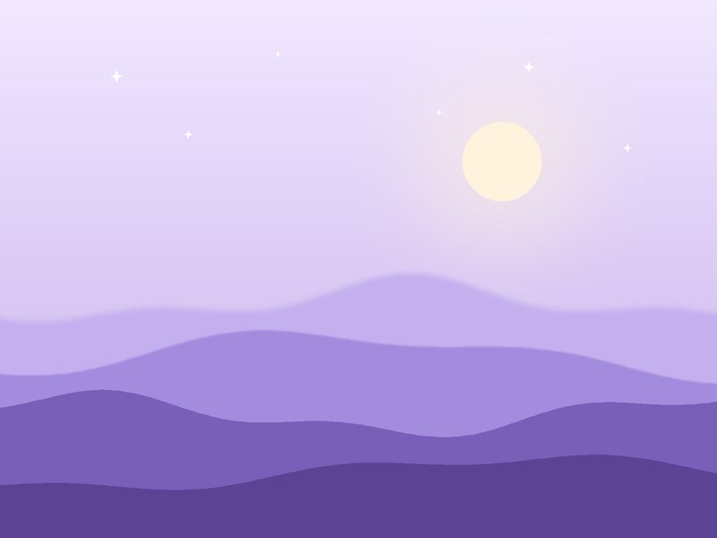
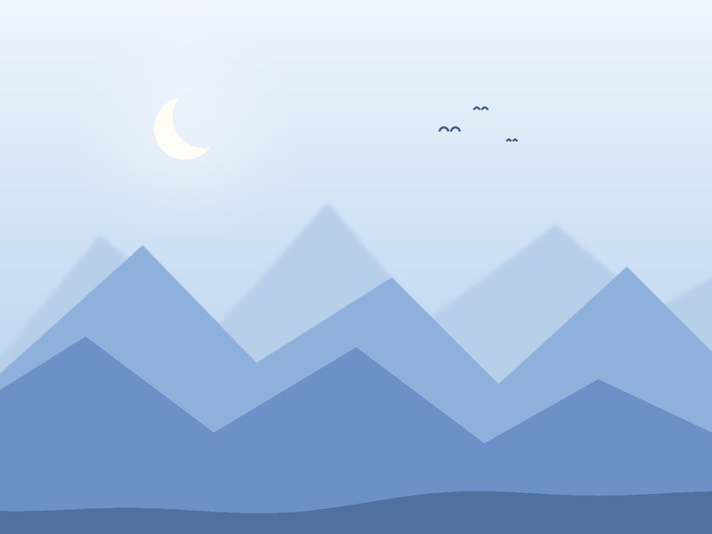
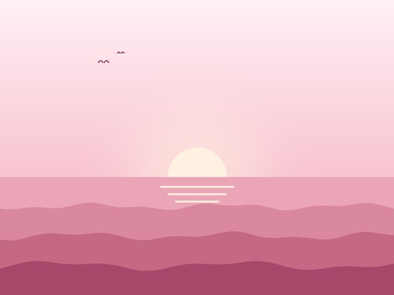

Pick one and start reading

Stories, trips, and everyday memories.
Open to read the stories

A scrapbook of places, people, and the days worth keeping.
Open to read the stories

Notes, journeys, and moments worth remembering.
Open to read the stories
Each journal is written and published by its own author.